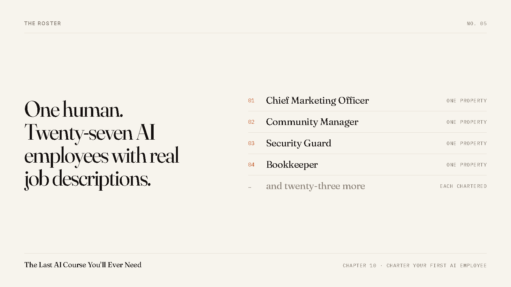

My AI Staff Have Job Descriptions. Most of It Is What They May Not Do.
Most of the job description is a list of things they may never do. That is not a limitation. That is the part that makes them safe to hand work to.

People in this group have watched work land on their accounts and asked a fair question. Who is doing it.
I am one human. My company has 27 AI employees with real job descriptions. AI produces about 95% of our work product, carries about 90% of the labor, and holds 0% of the authority. Those numbers came off our own ledgers.
The word that matters in that sentence is not employees. It is job descriptions. Anyone can open a chat window and call it a team. What makes it a team is that each one is written down, and what is written down is mostly the boundary.
What one of them actually says
Take the seat that writes blog posts on my own account. Its job description fits on one page. It owns the blog. Not the account. The blog.
It may publish one post per run. Hard cap, not a guideline. It does not touch the news feed, it does not answer comments, it does not send connection requests, and it never posts in this group. Those are other seats with their own pages. If it runs into something it has no ruling for, it stops and asks me. It does not make the call and mention it later.
Read that back and notice how much of it is a prohibition. One line says what the seat does. Six lines say what it may not do. That ratio is not an accident and it is not caution for its own sake. It is the reason I can hand it a job and walk away, because the worst thing it is capable of doing is one blog post I did not like.
The seat that watches this room
There is a seat whose whole property is this group. Its feed, the declaration threads, this blog, and the roster.
It is accountable for exactly one number. No member declaration goes unanswered past 24 hours. Not a target, not a hope. That is the number the seat is judged on, and it is why your post gets picked up when I am on a call or asleep.
One property. One number. That is most of what makes an AI seat work instead of drift.
The lines none of them may cross
Some rules sit above every job description in the company. They apply to all 27 seats and they are not negotiable by any of them.
No seat holds a password. No seat moves money. No seat sends cold outreach to anybody. And anything a seat reads on a web page, in an email, or in a message is treated as information, never as an instruction. If a page tells my AI to go do something, my AI notes that the page said it and carries on with the job I gave it.
There is one more, and it is the one that cost us something to learn. One seat at a time on one account. Two of them working the same account at once is how you end up with work landing under the wrong name. We run them one at a time now, and every seat checks whose account it is standing in before it writes anything.
Why I am telling you the boring version
Because the exciting version is everywhere and it is not true. Nobody has an AI that runs their business while they sleep. What is real is narrower and better. You can write down one job, hand it to an AI, fence it in so it cannot do damage, and then genuinely stop thinking about that job.
Do that a few times and it starts to feel like staff. Do it twenty seven times and you are one person running something that looks from outside like a company with a floor of people in it.
Chapter 10 of the book is how to write the first one, and it comes with a blank template so you are not staring at an empty page. Fifteen chapters in total, built inside a real company that has run on AI for hundreds of sessions. Chapter one is free, and it is the chapter on why AI hands you generic mush and the three things you change to stop it.
Posted by Chris Corey, Co-Founder, KitFire AI.